OPENING TITLES
The Cast
-
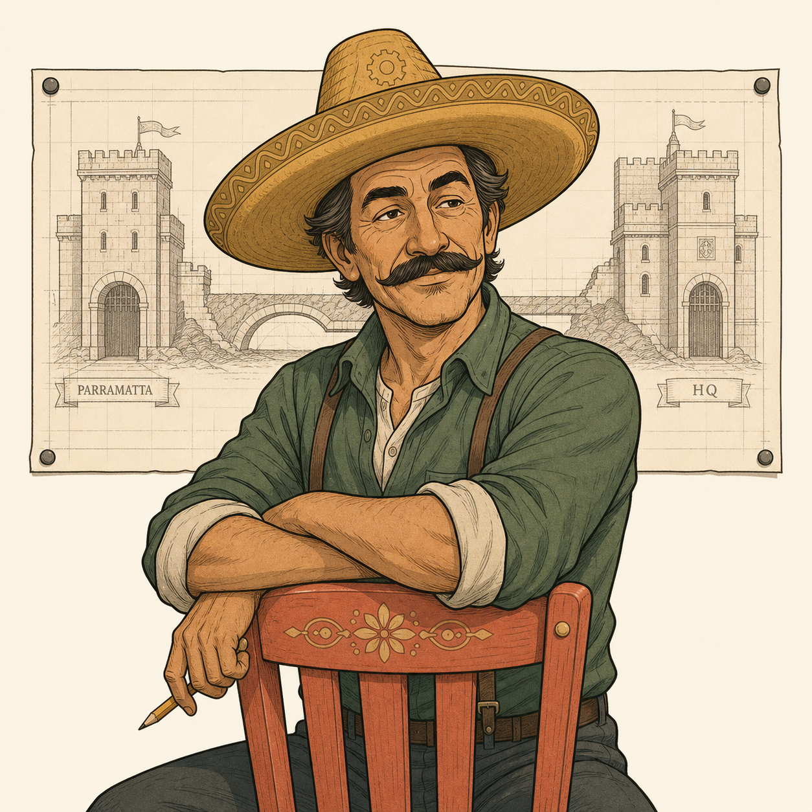
SeñorMastermindPlans the job from a chair, never touches a keyboard. -
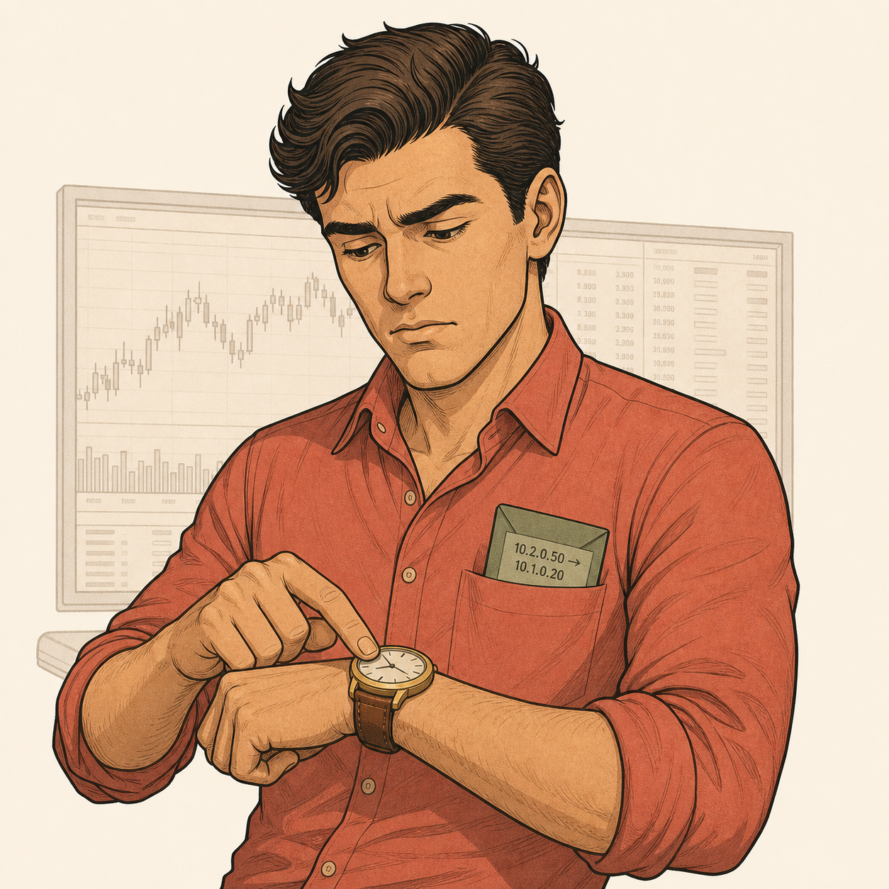
MarcusClientWants one thing moved to HQ by 8 AM, doesn't care how. -
The DiplomatsIKEOne per firewall. They negotiate, they never carry.
-
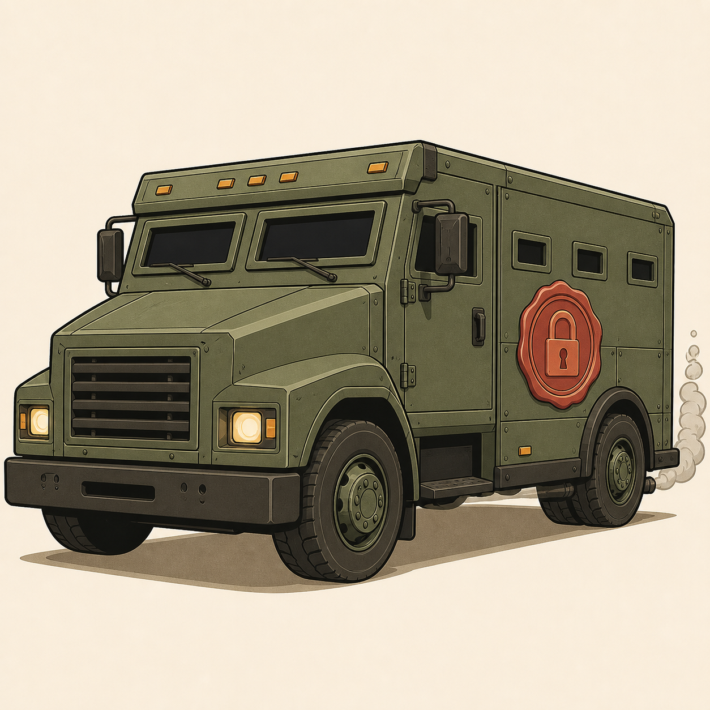
The ConvoyESPDumb, armoured, magnificent. Carries everything, negotiates nothing. -
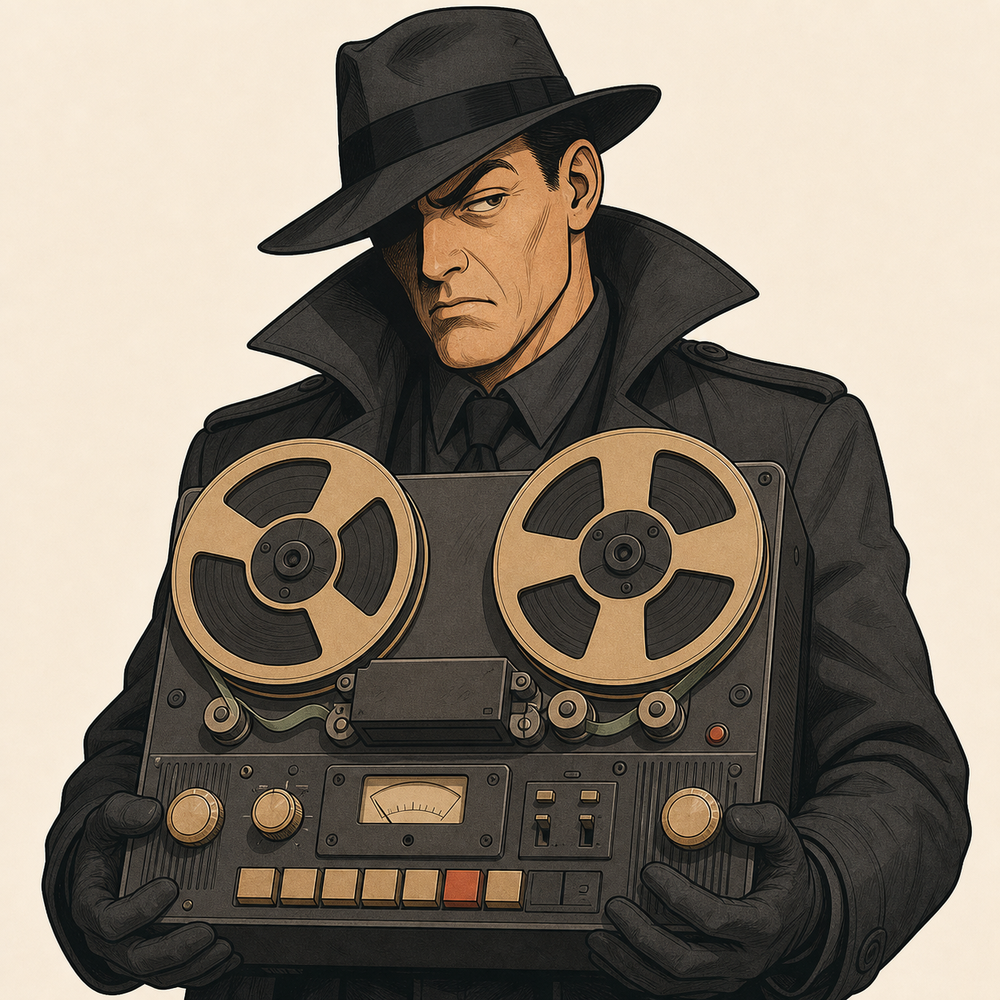
Agent StaticPassive eavesdropperSees every frame. Wins nothing, ever. -
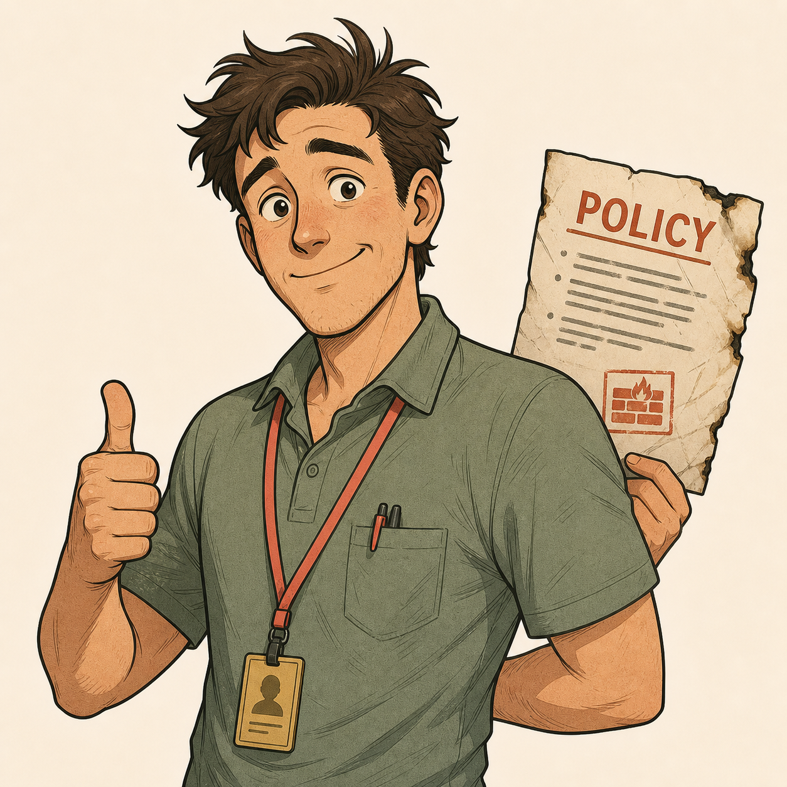
JuniorCautionary taleEnthusiasm in human form. Once forgot a policy, still hears about it.
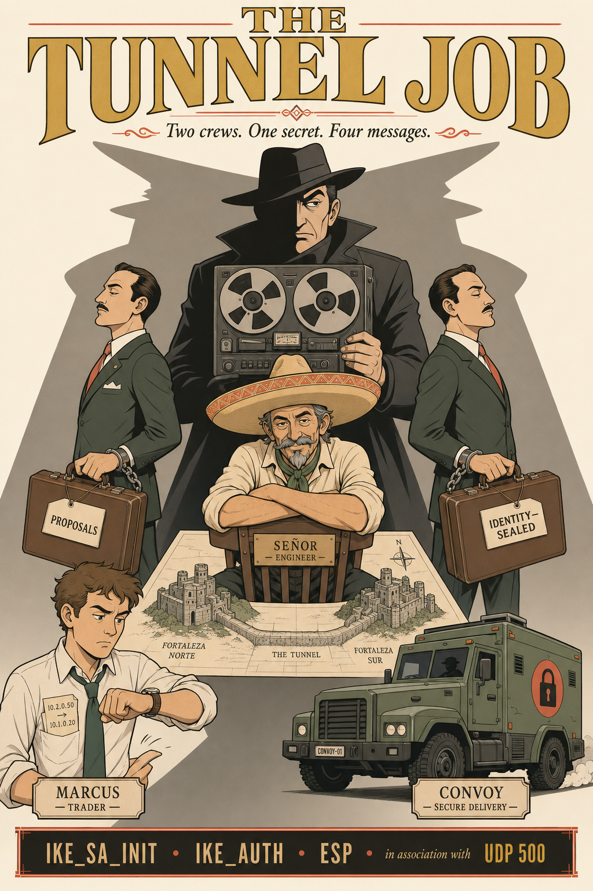
MENTAL NOTE
Diplomats negotiate, never carry. Convoy carries, never negotiates. The spy records everything and wins nothing. That's IKE, ESP, and a passive eavesdropper — the whole cast list.
SCENE 1 · 7:58 AM
The Job Comes In
SCENE AT A GLANCE
- StoryMarcus drops a letter at Parramatta. The route board points to a tunnel, but there's no treaty covering it yet.
- ProtocolPacket matches the tunnel interface route — but no SA exists, so the firewall triggers IKE.
- Remember"Interesting traffic" is what wakes IKE. No cargo waiting, no diplomat.
THE COLD CALL
- Marcus slaps a letter on the vault counter at Parramatta: "HQ. Trading floor. Now."
- The vault door — a fortress gate with a route board behind it — checks the destination: 10.1.0.0/24 → HQTunnel-ISP1. There's a road on the map… but no treaty covering it.
- The gatekeeper freezes, letter in hand, and picks up a red phone: "I have cargo but no treaty. Wake the Diplomat."
- Across the city, Agent Static hears the phone click and smiles. Finally. A job. He presses RECORD.
WHAT REALLY HAPPENED
- Marcus's plaintext packet (10.2.0.50 → 10.1.0.20) hit the Parramatta FortiGate.
- The static route matched the virtual interface HQTunnel-ISP1.
- No SAs exist yet — the firewall holds the packet and triggers IKE.
- Interesting traffic summons the diplomat; the diplomat never wakes without cargo waiting.
KEY POINTS
- Route match ≠ tunnel ready.
- No SA → trigger IKE.
- The trigger packet is held while negotiation runs.
SCENE 2 · IKE_SA_INIT · MESSAGES 1–2
The Meet — In Broad Daylight, On Purpose
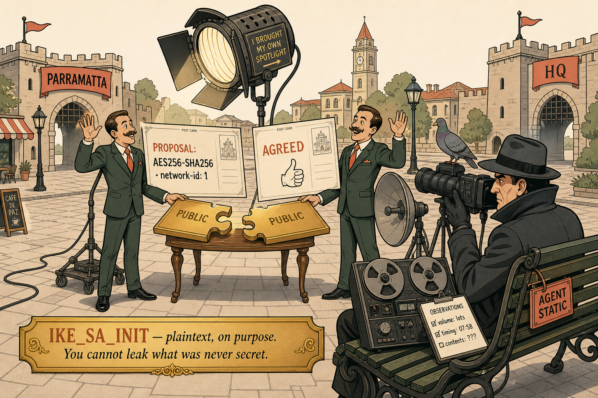
SCENE AT A GLANCE
- StoryDiplomats trade giant open postcards under a spotlight while Static photographs everything.
- ProtocolIKE_SA_INIT — two plaintext messages exchanging proposals, DH publics, nonces, network-id.
- RememberPlaintext by design. You cannot leak what was never secret.
UNDER THE SPOTLIGHT
- The two diplomats meet at noon in the middle of the town square — under a spotlight they brought themselves.
- They hand each other giant OPEN postcards while Agent Static photographs every word from a park bench three metres away, not even hiding.
- Postcard one: "We propose AES256-SHA256, network-id ONE." Postcard two: agreement.
- Each slides across a public puzzle-piece — half of something golden.
- Static photographs the puzzle pieces. He photographs the postcards. He photographs the pigeons. The diplomats wave at him.
WHAT REALLY HAPPENED
- IKE_SA_INIT: two messages, deliberately plaintext.
- Carries proposals, DH public values, and nonces.
- Includes Fortinet's network-id so the peer knows which phase 1 this belongs to.
- Public by design — nothing in it is usable to an attacker.
- The wave at the spy is the point: you cannot leak what was never secret.
KEY POINTS
- Two messages, plaintext.
- Contents: proposals + DH publics + nonces + network-id.
- Static gets nothing usable from this exchange.
DEEP DIVE What is Inside the IKE_INIT_AUTH
Straight to the postcard's fine print — good. Here's exactly what's written on each of the two IKE_SA_INIT messages.
SCENE 3 · THE DH RITUAL · THE CENTREPIECE
Growing the Secret
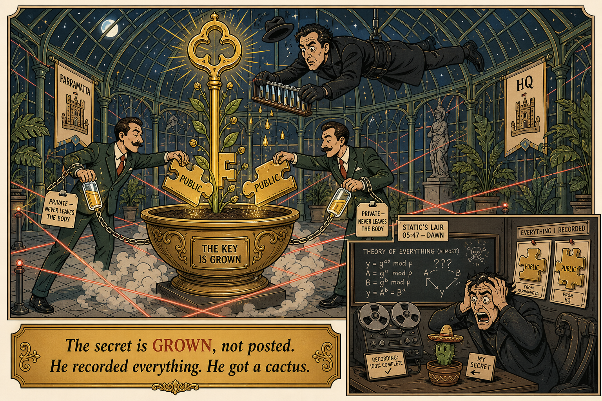
SCENE AT A GLANCE
- StoryThe diplomats grow a giant key by mixing public halves with their own private vials.
- ProtocolDiffie-Hellman — peer-public + own-private = identical shared secret on both sides.
- RememberThe secret is grown, not posted. Static's perfect recording yields a cactus.
INSIDE THE GREENHOUSE
- Midnight. A glass greenhouse the size of a cathedral, ringed with coral laser beams.
- In the centre: one colossal golden planter. Each diplomat approaches from opposite doors carrying TWO vials.
- One glowing vial chained to their wrist marked PRIVATE — NEVER LEAVES THE BODY, and the public puzzle-piece from the square.
- Each pours the other's public piece together with their own private vial into the soil.
- The greenhouse shakes. Organ music. Fog. Out of the planter grows a golden key the size of a lamppost, blooming like a beanstalk.
- Agent Static dangles from the ceiling on a wire, Mission-style, inches above the planter — catching every single droplet in test tubes.
THE MORNING AFTER
- Back at his lair, Static replays the tapes. He has both public puzzle-pieces, the soil samples, and 4K footage of the entire ritual.
- He combines them in his own planter and waits, sweating, all night.
- At dawn, his planter produces… one small, sarcastic cactus. He screams.
- He is missing the one ingredient that never crossed the square, never crossed the wire, never left a wrist: either private vial.
WHAT REALLY HAPPENED
- Diffie-Hellman. Each side combines the peer's public value with its own private value.
- Both sides independently arrive at the identical shared secret.
- The secret is grown, not posted — it never exists on the wire.
- Private values never transmit; only public halves cross the square.
- Recording the wire perfectly still yields nothing.
- This is why the open-air Meet was safe — the load-bearing wall of the entire protocol.
KEY POINTS
- Peer-public + own-private = same shared secret on both sides.
- Private values never leave the box.
- Passive recording is defeated by mathematics, not secrecy.
MENTAL NOTE
Peer's public piece + my private vial = the same giant key on both sides. The private vial never leaves the wrist. The spy who recorded everything grows a cactus. Grown, not posted.
SCENE 4 · IKE_AUTH · MESSAGES 3–4
The Whisper Room — and the Paperwork Rides Along
SCENE AT A GLANCE
- StoryDiplomats step into a soundproof vault to reveal identities and sign the cargo treaty in one visit.
- ProtocolIKE_AUTH — two encrypted messages carrying identities, PSK proof, and the first child SA piggybacked.
- RememberGrow the secret first, then whisper your name inside it. Four messages total, no quick mode.
BEHIND THE VAULT DOOR
- The giant grown key unlocks a door that wasn't there before: a soundproof vault INSIDE the greenhouse, walls a metre thick. The diplomats step in.
- Outside, Agent Static presses his parabolic microphone flat against the wall so hard it bends.
- Inside, for the first time, the diplomats remove their masks: "I am Parramatta." "I am HQ. Prove it." Secret handshake — the PSK — performed and verified.
- In the SAME visit, one diplomat produces a clipboard: "Since we're both here… sign the cargo treaty too."
- Routes 10.2.0.0/24 ↔ 10.1.0.0/24. Convoy cipher. Expiry date. Reference number. Signed.
- One meeting. No second appointment. Static's microphone records sixty seconds of rich, meaningless static.
WHAT REALLY HAPPENED
- IKE_AUTH: two messages, fully encrypted under the freshly grown secret.
- Identities and PSK proof are exchanged only now — after the secret exists.
- The first child SA piggybacks in this same exchange: traffic selectors, cipher, lifetime, SPI.
- IKEv2 has no quick mode — the whole handshake completes in four messages total.
- Aggressive mode (deleted scene) shouts identity before any key exists — speed and leak, same fact.
KEY POINTS
- IKE_AUTH is encrypted.
- Identities revealed only after DH.
- First child SA rides along — 4 messages total, no quick mode.
The aggressive-mode cameo: in the deleted scene, a rival diplomat announces his name through a megaphone before the ritual, to save one trip to the square. Speed and leak: same fact. Señor binned the screenplay.
SCENE 5 · THE HANDOFF
Two Keycards, Never Mixed
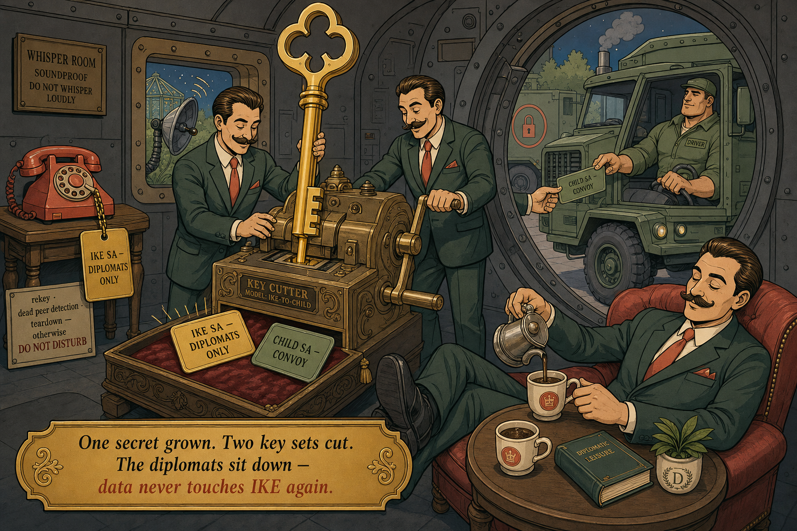
SCENE AT A GLANCE
- StoryThe grown key is cut into two cards: gold for the diplomats' phone, sage for the convoy driver.
- ProtocolOne DH secret → two independent key sets. IKE-SA keys and child-SA keys are different.
- RememberData packets never touch IKE again. IKE goes idle after the handoff.
CUTTING THE CARDS
- Inside the whisper room, the diplomats hold the giant grown key over a cutting machine and press.
- Out drop TWO different keycards.
- Card one — gold, labelled DIPLOMATS ONLY — goes on a chain by a red phone in the corner: their private line, for renewals and are-you-alive calls.
- Card two — sage green, labelled CONVOY — is walked outside and handed to the convoy driver, who grunts, slots it into the ignition, and asks precisely zero questions.
- The diplomats pour themselves coffee and sit down. Their part is over. The driver revs the engine.
WHAT REALLY HAPPENED
- One DH secret, two independent key sets derived.
- IKE-SA keys encrypt IKE_AUTH, future rekeys, dead-peer detection.
- Child-SA keys are used by ESP on the data.
- Compromising one set does not compromise the other.
- IKE manufactures the keys; ESP consumes them.
- After the handoff, data packets never touch IKE.
KEY POINTS
- Two key sets from one secret.
- IKE keys ≠ child-SA keys.
- IKE sits idle once ESP is running.
SCENE 6 · ESP · THE RUN
The Run — and the Stamp at the Gate
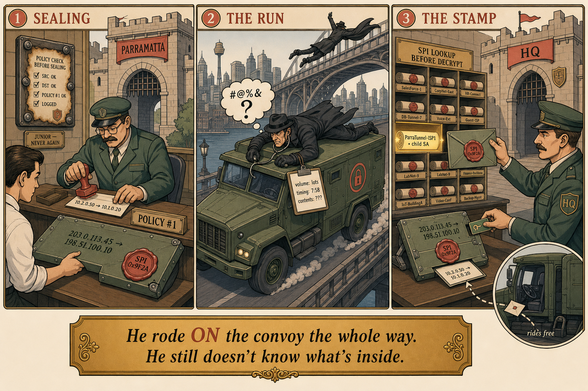
SCENE AT A GLANCE
- StoryThe letter is sealed in an armoured envelope with a different outer address; the HQ guard checks the wax stamp before unlocking.
- ProtocolESP tunnel-mode encapsulation. SPI in the ESP header selects which child SA; policies run on both firewalls.
- RememberMarcus is Packet B wearing a lanyard — replies of an established session ride free.
ENVELOPE BOUND FOR HQ
- Marcus's letter is finally lifted from the counter, checked once against the house rules (Policy #1 — the page Junior once forgot; the frame around it is bolted to the wall now).
- Then sealed inside an armoured envelope with a completely different address on the outside: 203.0.113.45 → 198.51.100.10.
- The convoy thunders across the city. Agent Static leaps from a bridge onto the roof, stethoscope to the armour, and hears… gibberish. Beautiful, expensive, forty-terabyte gibberish.
- At the HQ gate, the guard doesn't open the envelope first — he checks the reference number stamped on it, pulls the matching treaty from a wall of pigeonholes, and only THEN unlocks it with the convoy card.
- Out slides Marcus's letter, untouched. One more stamp — Policy #2 — and it's on the trading floor.
- The reply hops into the convoy's return seat without buying a ticket.
WHAT REALLY HAPPENED
- ESP encapsulation: the entire original packet is encrypted with child-SA keys and wrapped in a new outer header — envelope vs letter.
- On arrival, HQ matches the SPI in the ESP header to the correct child SA before decrypting.
- The SPI is the reference number that pulls the right treaty off the shelf.
- Firewall policies apply on both firewalls.
- Only the reply of an established session rides free.
- Marcus is Packet B wearing a lanyard — a new initiator, not a reply.
KEY POINTS
- Letter inside envelope; outer address belongs to the truck.
- SPI selects the SA before decryption.
- Both firewalls run policy; replies of an established session ride free.
SCENE 7 · EPILOGUE · 2:00 PM
Ten Thousand Runs Later — the Spy's Wall
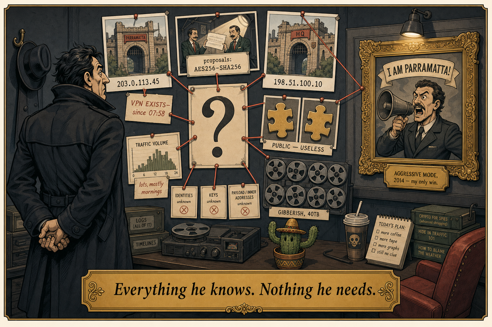
SCENE AT A GLANCE
- Story10,000 runs done. The diplomats nap by the red phone. Static's evidence wall points to nothing — one framed trophy: aggressive mode.
- ProtocolIKE SA stays up but idle. A passive recording reveals endpoints, existence, proposals, volume/timing — and nothing else.
- RememberThe only identity Static ever framed was aggressive mode — a plaintext shout, pre-DH, by design.
THE SPY'S WALL OF NOTHING
- 2 PM. The convoy has made ten thousand runs.
- The diplomats are asleep in their armchairs by the red phone, which has rung twice all day: once to renew the treaty before it expired, once just to ask "you alive?" — "sí."
- Across town, Agent Static stands before his EVIDENCE WALL — hundreds of photographs, tapes, soil samples, red string everywhere, all converging on… nothing.
- In the centre of the wall, in a golden frame with a museum light, hangs his single lifetime trophy: a photograph from another job, years ago, of a rival diplomat mid-shout through a megaphone: "I AM PARRAMATTA!" Aggressive mode. His one win.
- He dusts the frame. The cactus on his desk has grown a second sarcastic arm.
WHAT REALLY HAPPENED
- The IKE SA stays up but idle.
- It speaks only for rekey, dead peer detection, or teardown.
- Data packets are pure ESP.
- Passive recording yields: the two gateway IPs, the fact a VPN exists, the offered proposals, traffic volume and timing.
- And nothing else.
- The only way Static ever framed an identity was aggressive mode — plaintext, pre-DH, by design.
KEY POINTS
- IKE idle after setup; ESP does the work.
- Passive attacker gets: endpoints, existence, proposals, volume/timing — nothing more.
- Aggressive mode is the historical exception — a plaintext identity leak.
MENTAL NOTE
The red phone rings for three reasons only: rekey, dead-peer check, teardown. The evidence wall holds four things: endpoints, existence, proposals, volume. The trophy is aggressive mode. The cactus is Diffie-Hellman's verdict.
POST-CREDITS · QUESTIONS ON THE STORY
Interrogation Room
Answer from the story first — then translate to protocol. If you can do both, it's yours forever.
THE TUNNEL JOB — FIVE QUESTIONS
Every absurd detail was load-bearing. These five questions test whether the scene and the protocol are welded together in your memory.
1.Why do the diplomats bring their OWN spotlight to the Meet — why is broad daylight safe?
2.Static recorded the entire greenhouse ritual in 4K and caught the droplets. Why does his copied planter grow only a cactus?
3.Why does the cutting machine produce TWO keycards instead of one — and who holds each?
4.The HQ gate guard checks the wax stamp against the pigeonholes BEFORE opening the envelope. What is the stamp, and why check it first?
5.The red phone rings twice all afternoon. Name all three reasons it is ever allowed to ring.
Exam translation table: the Meet = IKE_SA_INIT (plaintext, safe) · the Ritual = Diffie-Hellman (grown, not posted) · the Whisper Room = IKE_AUTH (encrypted identities + piggybacked child SA, no quick mode) · two keycards = separate IKE-SA and child-SA keys · the Run = ESP tunnel mode (envelope vs letter) · the wax stamp = SPI · the red phone = rekey / DPD / teardown · the trophy photo = aggressive mode's plaintext identity.